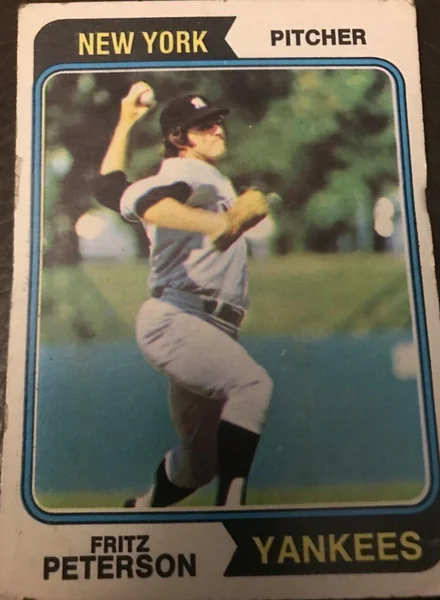

Fritz Peterson "Fritz"
Career Highlights & Facts
(Facts are AI-generated and may require verification)
- Maintained the lowest lifetime ERA of any pitcher at the original home venue.
- Led the league in fewest walks per 9 innings for 5 consecutive seasons.
- Participated in a highly publicized and unprecedented trade of families with a teammate.
Would you like to find out more about Fritz Peterson?
Player Biography
Fritz Peterson October 29, 2025 / in BioProject - Person 1970s All-Stars / by admin This article was written by Alice Andre-Clark After his retirement, Fritz Peterson recalled, “When I signed with the Yankees, the scout told me, ‘Heck, you’re a lefthander working in Yankee Stadium , you can count on a World Series check at least every other year.’” 1 The Yankees hadn’t finished in last place since 1912, when they were still the New York Highlanders. However, last place was exactly where they finished in Peterson’s rookie year of 1966, and they wouldn’t win another pennant until 1976, two years after his departure. Nevertheless, Peterson later reflected, “I’d rather have been a player on a losing Yankee team than to have been a winner, even of a World Series, with any other team. The Yankees ARE baseball.” 2 Peterson was one of the Yankees’ top starters for nearly all of his tenure there. He was especially effective at the original Yankee Stadium, where his lifetime ERA of 2.52 was the best of any Yankee who pitched there. 3 Every year from 1968 through 1972, he had the American League’s fewest walks per nine innings pitched. However, his impressive pitching has been overshadowed by his participation in one of the most surprising trades in baseball, a trade not of players but of families. Fred Ingels “Fritz” Peterson was born on February 8, 1942, in Chicago. He was the eldest of three children of Fred Joseph Robert and Annette (Ingels) Peterson. 4 Peterson’s father, a switchboard installer for the telephone company, 5 was a devoted White Sox fan. Peterson quickly learned to love the Sox and hate the Cubs, and to see the American League as the “big leagues.” 6 His favorite players were Nellie Fox and Billy Pierce , but he couldn’t help admiring the Yankees. 7 During Peterson’s rookie year, when Bob Friend was traded, he asked to receive Friend’s—and Billy Pierce’s—number 19. 8 Fred Peterson headed and coached in the Little League program for the town of Mount Prospect, Illinois. 9 Fred explained of his coaching, “I always felt that when a boy throws a ball, that someone should form a target for him. I had Fritz throw at the belt buckle, trying to get him to throw to the spots to sharpen his control.” 10 A teammate remembered, “Fritz got a head start on all of us.” 11 When Peterson entered Arlington High School, all that coaching did not pay off right away. At 5-feet-7 and 155 pounds, he had control, but not the size and strength to overpower hitters. 12 However, he kept throwing in the Arlington gym, and one day he felt something extra in his fast ball. 13 In 1960, his senior year, he won the starting assignment in the season opener and finished with a record of 5-2, an ERA of 2.00, 52 strikeouts and 20 walks in 48 innings. 14 After high school, Peterson enrolled in Northern Illinois University, and by the end of his junior year, he had grown to six feet and 185 pounds. 15 In 1963, he led the team in wins, innings, ERA, and strikeouts, and was named team MVP and All-Midwest. 16 He also played semipro hockey. During his professional career, Peterson acknowledged that he had found hockey less stressful than pitching. He observed, “In hockey, you take out your frustrations on your opponents. You belt somebody with a body check and let off steam.” 17 A neighbor who was impressed with Peterson’s pitching introduced him to Hal Danielson, a pitching coach and former minor-league catcher with the Yankee organization, who arranged a tryout with the team. 18 A friend of the family had also secured him a tryout with the Kansas City A’s, who were impressed enough to offer him a contract on the spot. 19 However, Peterson held out for the Yankees, and in July 1963, he reported to the Harlan (Kentucky) Yankees in the rookie-level Appalachian League. Playing in Appalachia produced some culture shock for the suburban Chicago native. He recalled, “Our manager, Gary Blaylock , instructed our players to take it easy on the girls in town. Their daddies were all coal miners and carried guns, for real. … We all stayed at the New Lewallen Hotel, … but it was really hot there since they had no air condition[ing].” 20 Peterson’s record, which included striking out 11.8 batters per nine innings, earned him a promotion to the Class A Shelby (North Carolina) Yankees. In 1964, he married teacher Marilyn Monks, and they welcomed two sons in 1967 and 1970. 21 Peterson climbed steadily through the minors: after Shelby, Single A Greensboro, where he was nearly unbeatable, finishing 11-1 with a 1.50 ERA, and then the AA Columbus (Georgia) Confederate Yankees. He was added to the Yankees’ 40-man roster for 1966. Yankee minor-league pitching coach Cloyd Boyer said of the prospect’s quick advancement, “We don’t take any credit for that. Fritz had everything but control when he reported here last year, and hard work got him that. He’s an example of what a boy can accomplish through dedicated practice. He wanted to get there in a hurry, and he did.” 22 Peterson made the team, winning the season’s first road game, at Baltimore. The first hitter he faced was Luis Aparicio , one of his old White Sox heroes. Aparicio scored a run, but Peterson held the Orioles scoreless after that until the ninth inning, when Frank Robinson hit a home run. That first start also marked the beginning of Peterson’s reputation for pitching the speediest games in the majors. Peterson explained, “In the first inning … Bobby Richardson came to the mound … and asked me if I could hear Mickey Mantle yelling out in center field. I couldn’t, but Richardson told me that Mantle was telling me to hurry up my pitches a little bit. …so the players behind me wouldn’t get back on their heels getting bored between pitches.” 23 That game lasted under two hours. Asked about his speed, Peterson joked, “I like to pitch fast and get the game over so I can find out who won.” 24 On July 4th, Peterson took a perfect game against the White Sox into the eighth inning, committing an error and allowing two hits at that point, but shutting the White Sox down 1-2-3 in the ninth for a 5-2 victory. Catcher Elston Howard said of him that year, “His fastball runs. I mean it moves. He’s a pitcher,” and “He’s got all the pitches, and he gets them all over. He wants a job, and he wants to win.” 25 He finished his rookie season with a 12-11 record and a 3.31 ERA. Peterson’s quick wit made him popular with sportswriters, as did his ability to finish games fast so they could easily meet their deadlines. They appreciated his honesty about his anxieties, such as when he confessed that he had kept his bags packed throughout his first couple of seasons, waiting to be sent to the minors. 26 They enjoyed his retellings of his vivid dreams, like the one where he was playing hockey with Bobby Hull, but when Hull passed him the puck, he discovered his stick was stuck to the ice. 27 Writers who covered the Yankees voted him 1970’s Good Guy Award, for “the ball player whose conduct on and off the field is cooperative, pleasant and understanding with press and fans.” 28 Following his rookie success, Peterson talked about becoming a 20-game winner, but the 1967 season did not unfold as he had hoped. Feeling overconfident after ending spring training with an easy win against Atlanta’s AAA team, 29 and receiving little run support, he began the season at 0-8, not earning his first win until three days before the All-Star game. Manager Ralph Houk had called Peterson into his office toward the end of the losing streak. Rather than send him down to the minors as Peterson was expecting, Houk told him, “Fritz, [general manager] Lee MacPhail and I have decided to start your season over, win/loss wise, and give you a chance to have a good year for contract purposes for the next season.” 30 From that point on, Peterson went 8-7, and finished with a 3.47 ERA. In 1968, Peterson flourished, with a 12-11 record and a 2.63 ERA, even as the Yankees finished in fifth place out of 10. The team slipped further in 1969, with an 80-81 record, fifth out of six in the first year of divisional play. Peterson had the best ERA of his career, 2.55, with a 17-16 record. He reasoned, “[L]osing by 2-1 doesn’t hurt as much as it used to. I still don’t like it, but now I rate myself on other things besides victories. I know the club is getting better, so if I just keep doing what I’m doing, perhaps I’ll win 20 in the near future.” 31 The 1970 season gave the Yankees hope, ending in a second-place finish in the AL East. While the infield was still struggling, Bobby Murcer and Roy White had strong seasons, and Thurman Munson was a near-unanimous choice for Rookie of the Year. This was also the year of Peterson’s only All-Star selection. With the American League ahead 4-2, he appeared in the ninth inning to pitch to one batter, Willie McCovey . McCovey got a ground ball hit, driving in a run, helping his team rally for three runs to send the game into extra innings, where the NL won, 5-4, in the 12th. As the end of the season approached, a pitching milestone was within Peterson’s reach. His record was 17-11 on September 16, but he had only three starts left, so if he wanted to be a 20-game winner, he would have to win all of them. He defeated the Senators 5-2 with a complete game at home on the 21st, then faced the Tigers on the 26th. They were tied 1-1 entering the bottom of the eighth, but Peterson singled and Munson batted in Peterson with the winning run. Unfortunately for Peterson, his last start would take place at Fenway Park , where he had never won a game. When he checked into his hotel and was assigned room 1912, which matched the record he would have if he lost, he asked to change rooms. 32 In that final game, the Yankees were up 4-1 in the bottom of the eighth, until Peterson walked Mike Andrews and allowed a Luis Alvarado home run. He got out of the inning hanging onto a 4-3 lead but then allowed two men on in the bottom of the ninth. Houk brought in Lindy McDaniel to relieve him. Peterson bypassed the dugout and hid under Houk’s desk with a towel covering his ears to muffle the crowd noise. 33 Not until the team returned to the clubhouse did Peterson learn that McDaniel had held the Sox scoreless, and he was a 20-game winner. When Peterson was not pitching, he was working hard to create a life after baseball. Although he had signed with the Yankees after his junior year at Northern Illinois University (NIU), he had not abandoned his studies. He completed his bachelor’s degree in 1965 and earned a master’s degree in physical education in 1967. 34 In 1973, he submitted his thesis on the personality differences between major-league and junior college ballplayers, for a certificate of advanced study. 35 During the offseason, he taught courses at NIU in billiards, bowling, golf, and archery, though he confessed that he never played billiards with his students. He had studied all the techniques, but his depth perception was terrible, and he figured he would lose. 36 He hoped to become NIU’s head baseball coach. 37 His other ambition was to become a sportscaster. After some experience broadcasting for NIU, in 1972 he did color commentary, with John Sterling doing the play by play, for the New York Raiders in the World Hockey Association. 38 Peterson was making his mark in the clubhouse too. Sparky Lyle described him as “the greatest practical joker I ever saw. You could never catch Fritz doing anything.” 39 His best-known prank, performed with Jim Bouton , was described by Bouton in Ball Four . After games, Joe Pepitone would blow dry his hair before switching from the game toupee that fit under his cap to the towering one he wore out on the town. Right after a 7-6 loss, Pepitone proceeded, unaware that Peterson and Bouton had filled the hair dryer with talcum powder. The result: Pepitone looked like George Washington in a powdered wig, but with powdered eyebrows, nose, and chest hair. “Loss or no,” Bouton recalled, “they all laughed like hell.” 40 The 1971 season found Peterson inconsistent. After blowing two shutouts in the ninth inning on June 23 and 28, leaving himself with a 6-7 record, Peterson pitched his first complete game victory at Fenway on July 3 and went on a tear that left him at 13-7 on August 17, only to hit a five-game losing streak and finish the season at 15-13. Lack of run support continued to be a factor as Peterson had a 3.05 ERA, but the team scored two or fewer runs in nine of his 13 losses. Weak performances by Yankee relievers meant that Peterson pitched 16 complete games, twice as many as in the previous season. Lacking an overpowering fastball, Peterson was constantly experimenting with pitches. “I guess it is partly my natural curiosity, partly the desire to stay ahead of hitters,” Peterson said of his increasing repertoire. “I’m not going to overpower anyone, so I have to finesse them. In order to do that, I have to adjust and change as the hitters adjust to me.” 41 He came into the Yankees organization with just a fastball and a curve, but by this time, he was working with six pitches, including one called “the thing,” which he described as a knuckle curve. 42 In 1972, the team got some relief help with the acquisition of Sparky Lyle, but the offense still looked weak. Peterson lost his first six games, with the Yankees scoring more than two runs in only one of them. In the loss where they managed seven runs, four fielding errors contributed to the 11 runs they gave away. Still, Peterson remained a dependable starter, finishing with a 17-15 tally, his fifth straight winning record. Although few knew it at the time, the 1972 season ended with a dramatic change in Peterson’s personal life. When Mike Kekich joined the Yankees in 1969, he and Peterson formed a fast friendship. Peterson taught Kekich how to throw a palm ball. He appreciated Kekich’s outspokenness and enjoyed hang-gliding and diving with the adventurous Kekich. 43 The Petersons socialized so much with Mike and Susanne Kekich that Mike ended up potty-training Peterson’s son with Junior Mints. 44 In 1972, the topic of trading partners was a passing joke in the spring but had turned serious by July. Fritz began going home with Susanne, and Mike with Marilyn. 45 After the season was over, the two pitchers went back to their families, but by this time Fritz and Susanne, drawn to one another’s easygoing natures and athleticism, had fallen deeply in love. 46 In December, they made a final decision: Peterson would move in permanently with Susanne and her two daughters and terrier, and Kekich would move in with Marilyn and her two sons and poodle. 47 In March 1973, Peterson and Kekich announced the exchange, emphasizing that it was not swinging, but a love story. 48 Unfortunately, by the time of the announcement, Kekich and Marilyn Peterson had split up. Kekich expressed some bitterness because he had understood that if any of the four wanted out, the trade would be called off. 49 Their Yankee teammates mostly supported Peterson and Kekich and expressed confidence in their ability to handle any awkwardness. “Their personal lives are their own business,” said Houk. “They live their own lives, and they’ve got a lot of years to live. If you’re not happy, you have to remember you only go through the world once.” 50 Others were less at ease. Columnist Dick Young demanded, “If Ralph Houk expects his players to live up to his rules, why is it asking too much for them to live up to society’s rules as well?” 51 Commissioner Bowie Kuhn declared, “I deplore what happened and am appalled at its effect on young people,” but concluded that the Commissioner’s office had no place in the matter. 52 Peterson said of the first game he pitched after the announcement, “Had the stadium in St. Petersburg been enclosed, the lights might have been shaken loose from the boos they dropped on me.” 53 Peterson’s pitching looked shakier in 1973. He later explained, “A lot of people blamed my bad year on the marriage thing. It really wasn’t, my arm was beginning to weaken. I got one cortisone shot in my left shoulder during the middle of the year, which helped a lot, but my arm was just wearing out. Before needing that shot, I had pulled a leg muscle in the beginning of the season which caused me to start to throw differently. …The new pitching delivery caused more stress on my shoulder. …” 54 He did get a memorable opportunity as starting pitcher for the last game ever played in the House That Ruth Built before the team moved to Shea Stadium while the new stadium was under construction. For the first time in his major league career, Peterson began the 1974 season out of the starting rotation. New pitching coach Whitey Ford was urging Peterson to cut down his array of pitches from eight to four, and Peterson agreed, promising, “I’m going to throw away the pitches I was getting hurt with most and concentrate on the others.” 55 He had one start on April 14 and two relief appearances over the next two weeks, all of them fairly unsuccessful. Recognizing that he might be traded, he told general manager Gabe Paul that if he had to leave the Yankees, he would willingly go anywhere except Cleveland or Philadelphia. Peterson recalled that Paul patted him on the shoulder and said, “Don’t worry young man. We wouldn’t do that to you.” 56 On April 26, Peterson and three other pitchers were traded to Cleveland. With Jim and Gaylord Perry firmly established as Cleveland’s top starters, Peterson felt uncertain of his place in the rotation. As a Yankee starter he had worried about the weather, how he felt, and how many days between starts. “But now,” he said, “none of that matters. As long as I’m pitching, I feel like somebody rather than nobody.” 57 Peterson found his way into the rotation, logging 29 starts, but with nine wins and 14 losses and a 4.36 ERA, he vowed, “I’m determined to do a better job than I did. I owe it to the Indians. They’ve been good to me.” 58 Peterson made good on his intentions. In 1974, he had been described as “a pot-bellied guy who looked like he should be pitching softballs at a Labor Day picnic.” 59 In 1975, he reported to spring training 25 pounds lighter after a winter regimen of swimming, jogging and weight training. 60 Manager Frank Robinson predicted that Peterson would win 15 to 20 61  and he was almost right. Peterson, who often became more effective later in the season, enjoyed a nine-game winning streak starting in late July, finishing at 14-8. He could still charm reporters with a quirky quote. Wrote one, “Fritz Peterson has an unusual hobby, photographing injuries to himself and his family.” Having recently suffered some deep cuts in a tractor mishap, Peterson explained, “I took a photo of the cuts, so I can remember them. When they heal, I can compare them.” He said that he planned to put the photos in an album, but he was waiting for the right photo to put on the cover: “I’d like to have some kind of a bone chip or calcium deposit to have photographed at the end of my career. I’d like to go out injured. A career shortened by injury. It’s kinda dramatic.” 62 Peterson’s fascination with injuries was perhaps a clue to the secret battle he was fighting to stay in baseball. He said that after his first cortisone shots, “I had a hundred more, mostly off the record, over the next two years in Cleveland. …” 63 The shots no longer seemed to help as he went 0-3 over his first nine starts in 1976. He was traded to Texas on May 29, and pitched his last game on June 19, 1976, when he tore a quarter-sized hole in his rotator cuff. 64 He had surgery in the fall of 1976 and went to 1977 spring training with the White Sox. His career came to an end after he faced one batter in spring training and realized he could not get the ball over the plate. 65 Over 11 seasons, he had a won-lost record of 133-131, an ERA of 3.30, and a WAR of 21.0. Peterson found two particularly lasting sources of joy in his post-baseball life. He married Susanne Kekich, and they went on to have three more children. 66 He said in 2013, “We’re still on the honeymoon and it has been a real blessing.” 67 At the end of his career in 1976, he embraced Christianity. He wrote, “If it hadn’t been for that, and my new wife, I don’t know what would have happened. The Lord really ‘saved’ me, literally and figuratively. Other than that, I was busted.” 68 Starting in 1979, he worked for several years as player coordinator for Baseball Chapel, identifying players who could lead prayer meetings for their teams. 69 He was not able to fulfill his plan of transitioning into announcing or coaching. He heard that when Yankee general manager Gene Michael asked owner George Steinbrenner about the possibility of Peterson doing color commentary for the team, Steinbrenner said, “Oh, we couldn’t do that,” apparently because of negative publicity around the family swap. 70 He made some audition tapes at White Sox games, but did not catch on. 71 As for college coaching, Peterson felt that he could not earn enough to meet his financial obligations to both families. 72 Peterson had a varied post-baseball career. He worked in financing. 73 He sold insurance. 74 He coached baseball at two Illinois colleges in 1984-86 and 1993. 75 He and Susanne managed a Florida real estate project for Yankee teammate John Ellis . 76 In 1995, he became a blackjack dealer on a riverboat casino. Although he confessed that when he started, he was “scared stiff,” just as he had been for his major-league debut, he discovered, “It’s like being in a movie. I’ve never laughed so much in my life.” His supervisor, like his Yankee coaches, praised his work ethic. 77 By 2009, Peterson was ready to tell his story. That year he released an unusual memoir, Mickey Mantle Is Going to Heaven , in which he profiled his teammates, ending each profile with a discussion of whether that teammate would ascend to heaven right away, or be forced to swim for a while in the lake of fire. 78 In 2014, he published When the Yankees Were on the Fritz , a year-by-year account of his Yankee career, and The Art of De-Conditioning, a cheeky guide to not exercising and not eating well. 79 Peterson also reconnected with the Yankees, relishing the opportunity to interact with teammates and fans at Fantasy Camps and Old-Timers’ Days. He said, “Even though I was a ‘little overweight’ and couldn’t throw anymore, putting on a Yankee uniform made me feel alive again. I realized the magic of what being a Yankee really meant.” 80 He never lost his love of a good prank directed at his teammates, as Moose Skowron learned after making an angry call to the Baseball Hall of Fame, demanding to know why it had requested that he donate his pacemaker “when you pass of course.” 81 In April 2018, Peterson revealed he would be unable to attend that year’s Old-Timers’ Day because he was suffering from Alzheimer’s disease, explaining, “It’s the saddest thing. I wanted to go and I can’t do it. I just wanted to let the fans know that.” 82 He died of lung cancer at his home in Winona, Minnesota, on October 19, 2023, at the age of 81. In one memoir, he had written, “If I were to ‘vanish’ (die) today … I will have finished up being a very ‘happy camper’!” 83 Acknowledgments This biography was reviewed by Rory Costello and David Bilmes and fact-checked by members of the SABR Bio-Project fact-checking team. Photo credit: Fritz Peterson, SABR-Rucker Archive. Notes 1 Leonard Koppett, “Peterson Never Cashed In on World Series,” The Sporting News , November 14, 1981. 2 Fritz Peterson, When the Yankees Were on the Fritz: Revisiting the Horace Clarke Years (Fritz Peterson, 2014), 180. 3 “Fritz Peterson: Bullpen Front Page,” Baseball Reference , https://www.baseball-reference.com/bullpen/Fritz_Peterson (Accessed August 22, 2025); Pete Caldera, “Fritz Peterson, former Yankees pitcher known for swapping wives with teammate, dies at 82,” Yahoo Sports, April 13, 2024. 4 Bruce Weber, “Fritz Peterson, Yankee Pitcher in an Unusual ‘Trade,’ Dies at 81,” New York Times (April 13, 2024); “Fritz Peterson, Yankees pitcher who swapped wives with teammate, dies at 81,” AP News , April 16, 2024. 5 Weber, “Fritz Peterson, Yankee Pitcher in an Unusual ‘Trade,’ Dies at 81.” 6 Fritz Peterson, Mickey Mantle Is Going to Heaven (Fritz Peterson, 2009), 83-85. 7 Peterson, Heaven , 83-85; Peterson, Fritz , 5. 8 Peterson, Fritz , 21. 9 Mike Korcek, “Six Degrees of Separation: Fritz Peterson, New York Yankees,” Men’s Senior Baseball League/Men’s Adult Baseball League , https: (Accessed August 23, 2025). 10 Bob Frisk, “Fritz Looks at Rookie Year, …” Daily Herald (Chicago) , October 6, 1966. 11 Korcek, “Six Degrees of Separation.” 12 Bob Frisk, “Rags to Riches Story Recalled, …” Daily Herald (Chicago) , June 30, 1966. 13 Frisk, “Rookie Year.” 14 Frisk, “Rags to Riches,” Bob Frisk, “Kickin’ It Around,” Arlington Heights Herald , June 9, 1960. 15 Frisk, “Rags to Riches.” 16 “Fred ‘Fritz’ Peterson Bio,” Northern Illinois University Huskies Hall of Fame, https: (Accessed August 23, 2025). 17 Jim Ogle, “Worry-Wart Peterson Fights Fear of Failure,” The Sporting News , May 17, 1969. 18 “Fritz Peterson shows Coach Hal Danielson the hat he will be wearing as a pitcher in the New York Yankee system,” Herald (Crystal Lake, IL) , July 11, 1963. 19 “Fritz Peterson shows Coach.” 20 Peterson, Fritz , 46. 21 Murray Chass, “Peterson and Kekich in Family Exchange,” New York Times , March 6, 1973; Peterson, Fritz , 47, 105. 22 Tom Northington, “baseball,” Greensboro News and Record , April 26, 1966. 23 Peterson, Fritz , 64. 24 Jim Ogle, “Yanks Hoping Fritz Learns How to Relax,” The Sporting News , November 4, 1967. 25 Joe Donnelly, “If Peterson Can Win, He Can Learn the Rest,” Newsday , April 16, 1966; Gordon Beard, “‘Control’ Big Factor,” Pottsville Republican , April 16, 1966. 26 Jim Ogle, “On Again, Off Again Fritz Is Houk’s Biggest Puzzle,” The Sporting News , September 4, 1971. 27 Maury Allen, “Fritz’s Pitch Makes ‘Em Jump,” BBWAA Scorebook 10, 1971. 28 “Good Guy,” New York Daily News , January 24, 1971. 29 Peterson, Fritz , 33. 30 Peterson, Fritz , 35. 31 Jim Ogle, “Yank Troubles Don’t Include First-Rate Mound Staff,” The Sporting News , November 22, 1969. 32 Arthur Daley, “A 20 Game Winner,” New York Times , March 28, 1971. 33 Daley, “A 20 Game Winner.” 34 Fred “Fritz” Peterson Bio; “Yank Ace Pitches In at NIU,” Chicago Tribune , January 10, 1971. 35 “Fritz Knuckles Down on Thesis,” New York Daily News , June 4, 1973. 36 Peterson, Fritz , 132; “Yank Ace.” 37 Peterson, Heaven , 23-29. 38 David J. Halberstam, “Often criticized Yankees play-by-player John Sterling, 80 today, was a pioneer sports talk host,” Sports Broadcast Journal , July 4, 2018; Peterson, Fritz , 79, 142. 39 Sparky Lyle & Peter Golenbock, The Bronx Zoo (South Orange, NJ: Summer Game Books, 2019), 151. 40 Jim Bouton, Ball Four: 50th Anniversary Edition (New York: Rosetta Books, 2000), 174. 41 Jim Ogle, “Joker Fritz Ace-High on Yankee Hill,” The Sporting News , April 17, 1971. 42 Peterson, Heaven , 45-51. 43 Peterson, Heaven , 23-29. 44 Peterson, Heaven , 23-29. 45 “‘It Won’t Hurt Us If They Do the Job,’” Daily Press , March 7, 1973. 46 Peterson, Heaven , 23-29; Jim Ogle, “‘Dear Abby’ Takes Over Yank Camp,” The Sporting News , March 24, 1973 47 Ogle, “Dear Abby.” 48 Chass, “Family Exchange.” 49 Chass, “Family Exchange.” 50 Chass, “Family Exchange;” Phil Pepe, “Yanks Express Shock, Sympathy, Understanding,” New York Daily News , March 7, 1973. 51 Dick Young, “What’s Going On Here? News Item: Wife-Swap Stirs Controversy,” New York Daily News , March 8, 1973. 52 “Kuhn ‘Appalled’ By Wife-Swap Case,” Pittsburgh Press , March 20, 1973. 53 Peterson, Heaven , 30-34. 54 Peterson, Heaven , 75-82. 55 Phil Pepe, “Yankee Aces Fall Short of Salary Goals,” The Sporting News , March 16, 1974. 56 Peterson, Fritz , 178. 57 Murray Chass, “Peterson Glad He’s Pitching,” New York Times , June 25, 1974. 58 Russell Schneider, “A Lean, Hungry Fritz Delights Tribe,” The Sporting News , April 5, 1975. 59 Schneider, “A Lean, Hungry Fritz Delights Tribe.” 60 Schneider, “A Lean, Hungry Fritz Delights Tribe.” 61 Schneider, “A Lean, Hungry Fritz Delights Tribe.” 62 “A.L. Flashes,” The Sporting News , October 11, 1975. 63 Peterson, Heaven , 75-82. 64 Peterson, Heaven , 75-82. 65 Peterson, Heaven , 75-82. 66 Kevin Kernan, “Swap Team: Ex-Yank Fritz recalled for family switch,” New York Post , September 5, 2009. 67 Joe Capozzi, “Ex-Yankee Fritz Peterson has no regrets 40 year after wife swap,” Palm Beach Post , January 26, 2013. 68 Peterson, Heaven , 86-91. 69 George Vecsey, “Three Spring Visitors,” New York Times , March 12, 1982; Peterson, Heaven , 66-74. 70 Peterson, Heaven , 14-17. 71 Sheila Moran, “’Spite Has Long Gone’—Kekich on Family Swap,” Toledo Blade , July 26, 1977. 72 Peterson, Heaven , 23-29. 73 Dion Martorano, “Former Arlington Star, Infamous New York Yankee Pitcher, Fritz Peterson Dies at Age 82,” Journal & Topics , April 16, 2024. 74 Weber, “Fritz Peterson, Yankee Pitcher in an Unusual ‘Trade,’ Dies at 81.” 75 Martorano, “Former Arlington Star, Infamous New York Yankee Pitcher, Fritz Peterson Dies at Age 82.” 76 Peterson, Fritz , 147-48. 77 Matt Baron, “A new pitch,” Courier News , October 2, 1995. 78 Peterson, Heaven . 79 Peterson, Fritz ; Fritz Peterson, The Art of De-Conditioning (Fritz Peterson, 2014). 80 Peterson, Heaven , 86-91. 81 Peterson, Heaven , 52-58, 92. 82 Kevin Kernan, “Fritz Peterson, famed wife-swap Yankee, reveals Alzheimer’s battle,” New York Post , April 19, 2018. 83 Peterson, Heaven , 86-91. Full Name Fred Ingles Peterson Born February 8, 1942 at Chicago, IL (USA) Died October 19, 2023 at Winona, MN (USA) Stats Baseball Reference Retrosheet If you can help us improve this player’s biography, contact us . Tags 1970s All-Stars · Share this entry Share on Facebook Share on X Share on LinkedIn Share on Reddit Share by Mail
Career Totals
| WAR | W | L | ERA | G | GS | SV | IP | SO | WHIP |
|---|---|---|---|---|---|---|---|---|---|
| 21.0 | 133 | 131 | 3.30 | 355 | 330 | 1 | 2218.1 | 1015 | 1.191 |
Statistics via Baseball-Reference.com
The Original Clue